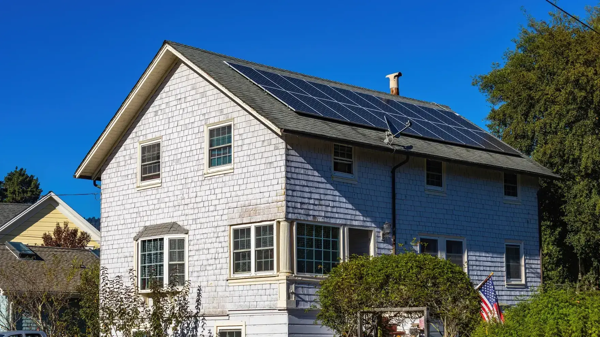
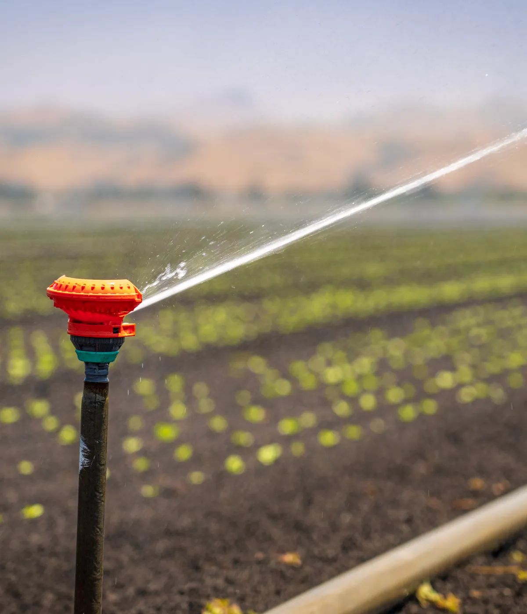
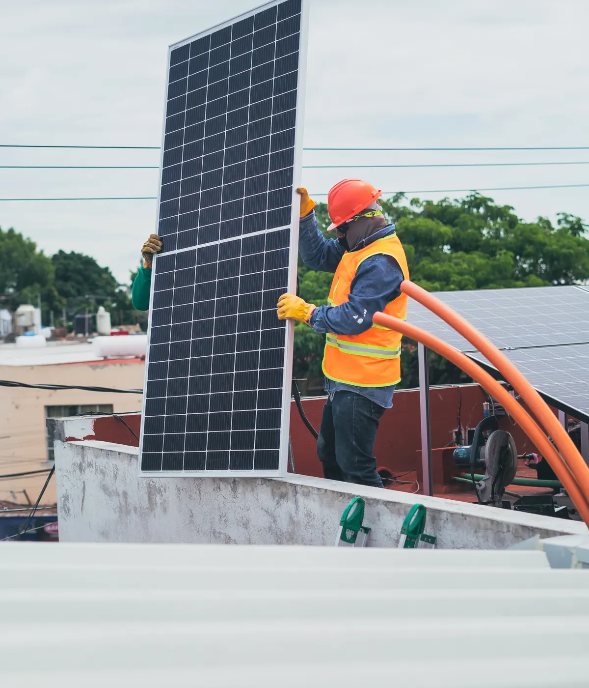
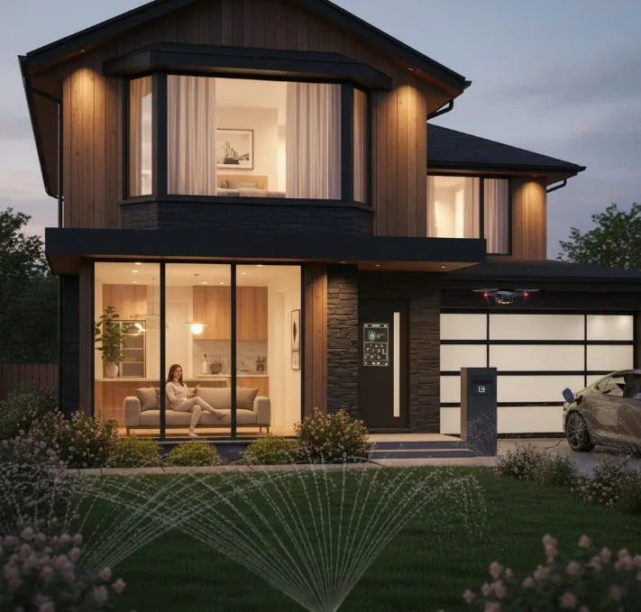

01
Domótica
Luces, riego, portón y tomas desde el celular. Se conecta al mismo tablero que el sistema solar, así lo que más consume arranca cuando hay sol.
Consultar domótica
Energía solar · Domótica · Riego autónomo
Traé el consumo en kWh de tu factura: te decimos cuántos paneles entran en tu techo y cuánto cubre el sol.
Tu consumo, pasado a paneles.
Lo dice tu factura, en el renglón de consumo del período.
Estimación con 4,8 horas de sol pico promedio de la zona y paneles de 550 W. La medida final sale de la visita técnica.
Catálogo
Seis armados que ya montamos y repetimos. Filtrá por destino y la grilla se reacomoda con el total de potencia que estás mirando.
No hay un armado con ese nombre. Probá con «batería», «bombeo» o el número de kWp — o escribinos y lo calculamos a medida.
¿Ninguno encaja justo con tu techo? Los armamos a medida.
Cotizar a medidaTambién te puede interesar
Luces, riego, portón y tomas desde el celular. Se conecta al mismo tablero que el sistema solar, así lo que más consume arranca cuando hay sol.
Consultar domótica
La bomba arranca con el sol y para cuando baja, sin tablero ni operario en el molino. No lleva baterías: riega en las horas en que el panel entrega.
Consultar riego
Limpieza de paneles, revisión de conexiones y control del inversor. Te dejamos por escrito cuánto generó el sistema en el período.
Coordinar mantenimientoCómo trabajamos
Sin anticipos para averiguar. La visita técnica es la que define paneles, orientación y tablero.
Arrancar por el paso 1Nos pasás el consumo en kWh. Con eso ya sabemos en qué orden de potencia estamos y si conviene on-grid, híbrido u off-grid.
Medimos techo libre, orientación, sombras y el estado del tablero. Es lo que cambia el número estimado por el número real.
Te pasamos por escrito qué paneles, qué inversor, cuántos kWp y qué queda a cargo nuestro. Acordamos antes de tocar nada.
Montaje, conexión, pruebas y la app andando en tu celular. Te dejamos el sistema midiendo lo que genera desde el primer día.

Obra terminadaObras
4,8 h
Horas de sol pico promedio por día en el sudoeste bonaerense. Es el número con el que calculamos cada techo: define cuánto entrega un panel acá, que no es lo mismo que en el norte.
Charlemos y acordamos
Dejanos el día que te queda cómodo y de dónde sos. Vamos con el cálculo ya hecho, medimos, y acordamos el sistema recién ahí.
O escribinos directo: 2923 64-5056
Preguntas
Sí, con menos entrega. El panel trabaja con la luz, no con el calor: nublado genera una fracción de lo que genera despejado. El cálculo anual ya lo contempla, porque las 4,8 horas de sol pico son un promedio del año, no el mejor día.
Si tenés red, no. Un sistema on-grid usa la red como respaldo y sale bastante menos. Las baterías tienen sentido en el campo sin red, o si querés seguir con luz durante un corte. Por eso en el catálogo el armado con batería figura aparte.
Contá 2,6 m² por panel de 550 W, dejando paso para caminar. En 30 m² libres entran unos 11 paneles. El traductor de factura de arriba hace esa cuenta con tu medida; la definitiva sale de medir orientación y sombras en la visita.
Poco: limpieza de los paneles cuando se junta tierra o polvo de cosecha, y una revisión de conexiones e inversor. No tiene partes móviles. En zona de campo la limpieza se nota más en la entrega que en cualquier otra cosa.
La ley 27.424 de generación distribuida habilita al usuario a inyectar su excedente a la red. El trámite y el medidor bidireccional los gestiona la distribuidora de tu zona; lo vemos junto con el tablero en la visita.
Depende del tamaño del sistema, del tipo de techo y de si hay que tocar el tablero. Te lo confirmamos en la visita técnica, con fecha, y queda por escrito en la propuesta.
Los paneles van perdiendo entrega de forma muy gradual a lo largo de décadas; el inversor es el componente que antes se reemplaza. Cada equipo trae su garantía de fábrica y te la pasamos en la propuesta, sin promesas de nuestra parte por encima de eso.
Un on-grid se desconecta por seguridad mientras no hay red, así que no te da respaldo en un corte. Si eso te importa, el camino es el híbrido con batería: mantiene los consumos que definas mientras dura la reserva.
Primero el número, después el techo, y recién ahí hablamos de plata.
Coronel Suárez y alrededores · Casa, campo y comercio
Generación estimada con 4,8 horas de sol pico promedio de la zona. La propuesta final sale de la visita técnica.